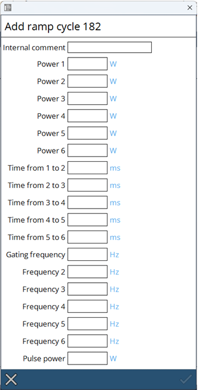

Ramp cycles
For quality piercings Laser Ramp Cycles are used to control the laser power during the piercing process. In ramp mode, a start hole for laser cutting can be produced in a low-impact manner. To do this, the laser power and the gating frequency are controlled via a programmed interval. This piercing process prevents damage to the focusing optics and ensures that uncontrolled burning away of material does not occur.

The ramp will only be shown graphically in the user interface for a maximum of 100 s. Longer ramps will however still run as defined. The laser’s power, times and gating frequency must be adjusted for the material’s type and thickness.

Select a Ramp Cycle which allows editing. The numbers greater than 180 are editable. You neeed to Input an Internal comment, otherwise not able to save.
-
The internal comment should give a clear description of the intention of the cycle
-
Power of the laser during the piercing process is controlled by the ramp cycle
-
Time is the duration of the ramp cycle
-
Gating Frequency : tbd
-
Frequency : Laser Frequency
-
Pulse power : tbd